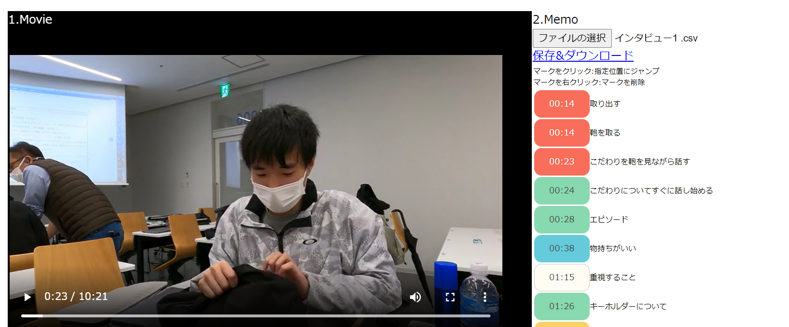
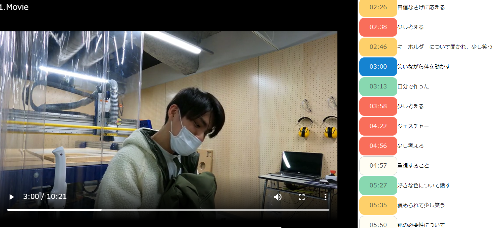
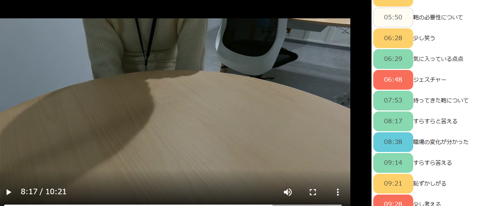

課題11

気づいた点
人によって動き方は違うが、必ず話と同時に動きがあることが分かった。特に感情が出るときにそう感じた。年齢や性別、職業などによっても鞄の種類や持つ量が変わることも分かった。インタビューの雰囲気によっても表情や行動に違いが出ると思うので、場所や形式の変化を加えて行ってみたい。
発表の時に先生に言われたように、気づく力は自分次第なので、その力を鍛えたいと思った。
デザイン演習１・２トップページ
XBPトップページ